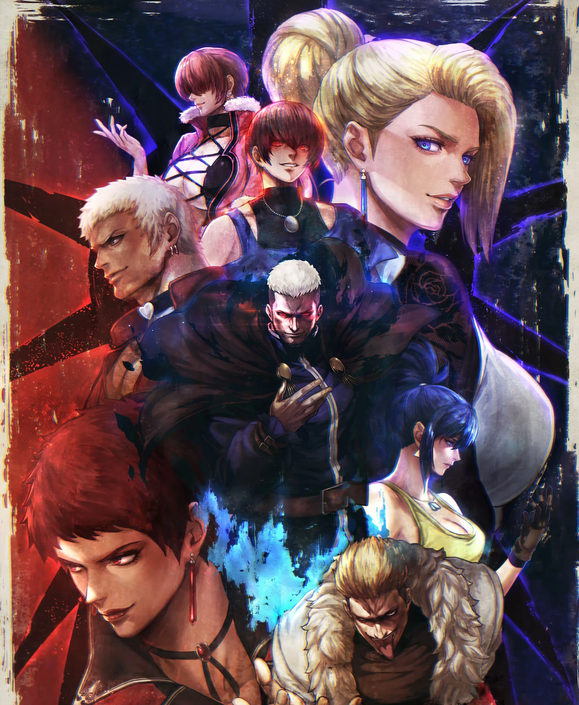
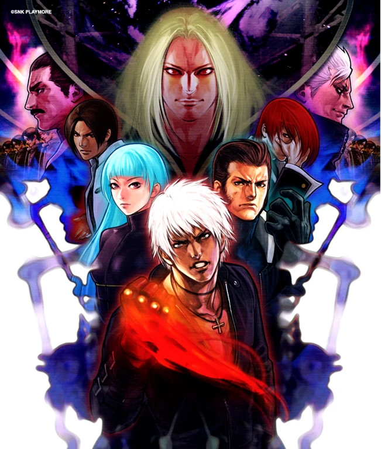
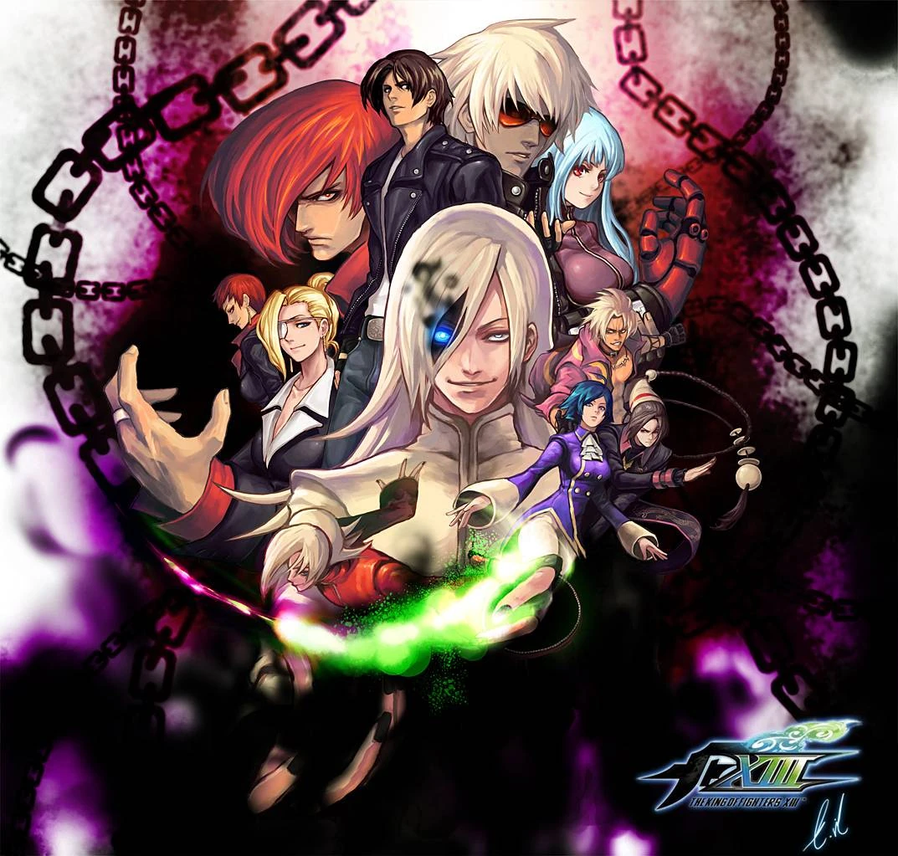
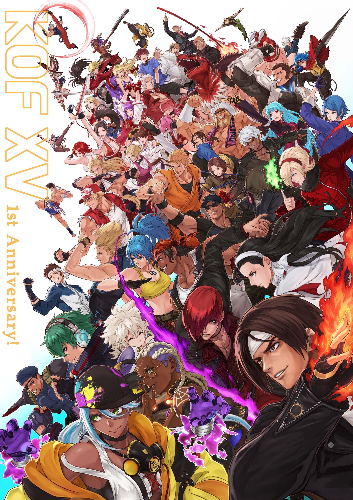

Los Orígenes
The King of Fighters es una serie de videojuegos de lucha desarrollada por SNK que debutó en 1994. La saga nació como un crossover entre las series Fatal Fury y Art of Fighting, creando un universo unificado donde los personajes de ambas franquicias podían enfrentarse. El concepto revolucionario de batallas por equipos de tres luchadores no solo diferenciaba a KOF de otros juegos de lucha de la época, sino que también permitía narrativas más complejas y dinámicas entre los personajes. SNK logró crear algo más que un simple crossover: estableció las bases de lo que se convertiría en una de las franquicias de lucha más influyentes y perdurables de la historia de los videojuegos.
La Saga Orochi (1994-1997)
Los primeros tres juegos de la serie (KOF '94, '95 y '96) introdujeron la historia de Orochi, una entidad ancestral que amenaza la existencia. Los protagonistas Kyo Kusanagi e Iori Yagami, herederos de clanes rivales, se ven obligados a cooperar para enfrentar esta amenaza. Esta saga estableció los cimientos narrativos de la serie, presentando la antigua rivalidad entre los clanes Kusanagi y Yagami, una enemistad que se remonta a 1800 años atrás cuando ambas familias, junto con el clan Yata, sellaron a Orochi. La maldición que pesa sobre Iori, manifestada en su "Riot of the Blood", añade una capa trágica a su personaje, mientras que Kyo representa la determinación inquebrantable del héroe. El clímax en KOF '97 no solo resolvió la amenaza de Orochi, sino que también exploró temas profundos sobre el destino, el sacrificio y la redención, estableciendo el tono épico que caracterizaría a toda la serie.

La Saga NESTS (1999-2001)
Tras KOF '97, la serie introdujo nuevos protagonistas como K' y Maxima, mientras exploraba los experimentos del cartel NESTS. Esta saga se caracterizó por su tono más oscuro y tecnológico, alejándose de los elementos místicos anteriores. El cartel NESTS, una organización siniestra obsesionada con crear el luchador perfecto, condujo experimentos inhumanos que resultaron en la creación de clones de Kyo y el desarrollo de K', un anti-héroe atormentado por su origen artificial. Esta trilogía (KOF '99, 2000 y 2001) exploró temas como la identidad, la humanidad versus la artificialidad, y el precio del poder. La introducción de los modos Striker y la evolución del sistema de combate reflejaron perfectamente la temática tecnológica de la saga. El sacrificio final de K9999 y la caída de NESTS demostraron que incluso los experimentos más ambiciosos tienen consecuencias devastadoras cuando se anteponen a la humanidad.

La Saga Ash (2003-2011)
Con Ash Crimson como nuevo protagonista, esta saga exploró viajes en el tiempo y la manipulación de la historia. Los eventos culminaron en KOF XIII, donde se resolvieron los misterios en torno al personaje de Ash y su conexión con el pasado. Ash Crimson presentó uno de los arcos narrativos más complejos y controvertidos de la serie: un aparente villano cuyas verdaderas intenciones permanecieron ocultas durante años. Su misión de robar los poderes de los descendientes de los clanes que sellaron a Orochi (Chizuru, Iori y Kyo) parecía malévola, pero se reveló como un plan desesperado para evitar que Saiki destruyera la dimensión temporal. La saga introdujo conceptos como los Ancestros de la Tierra (Those from the Past) y exploró paradojas temporales que amenazaban con borrar la existencia misma. El sacrificio final de Ash, borrándose de la historia para salvar el mundo, representó una de las conclusiones más emotivas y heroicas de cualquier saga de KOF, redefiniendo completamente la percepción del personaje y demostrando que los verdaderos héroes a menudo actúan desde las sombras.

Era Moderna (2016-presente)
KOF XIV marcó el regreso de la serie a los gráficos 3D y introdujo nuevos personajes mientras reunía a favoritos clásicos. KOF XV continuó esta tradición, refinando la jugabilidad y expandiendo la historia con nuevas amenazas y alianzas. Esta era representa un renacimiento para la franquicia, combinando la nostalgia de los elementos clásicos con innovaciones modernas. KOF XIV introdujo más de 16 personajes completamente nuevos, expandiendo significativamente el roster y explorando nuevas nacionalidades y estilos de lucha. La historia se centró en la amenaza de Verse, una entidad que materializaba las almas de luchadores del pasado, creando un meta-comentario fascinante sobre la historia de la propia serie. KOF XV elevó aún más estos conceptos con Re Verse y la exploración de dimensiones alternativas, mientras que el refinado sistema MAX Mode y las Climax Super Special Moves ofrecieron la jugabilidad más accesible pero profunda de la serie. Esta era ha demostrado que KOF no solo mantiene su relevancia después de casi 30 años, sino que continúa evolucionando y atrayendo nuevas generaciones de fanáticos mientras honra su legado.

Legado e Impacto
The King of Fighters se ha convertido en una de las series de lucha más respetadas y duraderas, conocida por su sistema de equipos de 3 personajes, su profunda narrativa interconectada, y personajes icónicos que han trascendido el medio de los videojuegos para convertirse en íconos de la cultura pop. Su influencia se extiende mucho más allá del ámbito de los videojuegos: ha inspirado manga, anime, novelas ligeras y una película live-action, estableciendo un universo multimedia rico y diverso. El sistema de equipos de KOF revolucionó el género de lucha al introducir dinámicas estratégicas complejas y permitir narrativas grupales que otros juegos no podían explorar.
Personajes como Kyo Kusanagi, Iori Yagami, Terry Bogard y Mai Shiranui se han convertido en arquetipos reconocibles globalmente, influyendo en el diseño de personajes en múltiples medios.